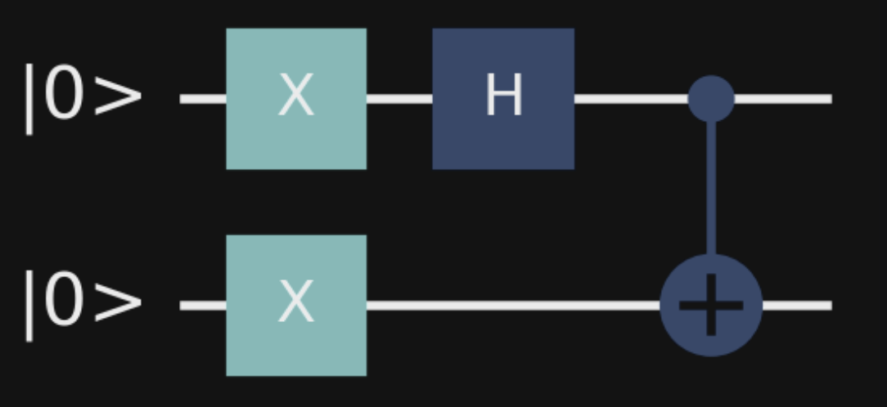

Entanglement
Published:
What is entanglement? How does it work? Why is it so strange? In this blog post we’ll explore these questions.
Entanglement
Once referred to as “spooky action at a distance” by Einstein, entanglement is one of the most puzzling aspects of quantum mechanics. It’s implications are counterintuitive to us, because we are used to interacting with objects on “human scale”, or a few orders of magnitude smaller than that. Quantum particles on the other hand are many more orders of magnitude smaller. Perhaps one of the largest quantum objects created so far is a sapphire crystal weighing 16 micrograms and consisting of about $10^{17}$ atoms. That’s truly is small, but quantum particles used in experiments or actual quantum computers, such as ions, electrons or photons, are even smaller. When studying quantum mechanics it’s a recurring theme that on such small scales, the world just works differently than what we’re used to. Entanglement is a specific manifestation of this.
In this blog post we’re exploring what entanglement is on a mathematical level, relate it to something more tangible (photons) and discuss what makes it so strange. Prerequisites are basic familiarity with Dirac notation and quantum concepts like superposition.
Bell’s states
We first consider the simplest example of achieving entanglement: a Bell state. Specifically, we create the Bell state $\Psi^{-} = \frac{\ket{01}-\ket{10}}{\sqrt{2}}$, which is obtained by
- preparing a 2 qubit register with both qubits in the $\ket{1}$ state
- applying the Hadamard gate to the first qubit
- applying the CNOT controlled by the first qubit, acting on the second

Both qubits are in superposition, that is, if we were to measure either one we would find that they are in the $\ket{0}$ and the $\ket{1}$ states with 50% probability each. Their entanglement means that they are also correlated: if we were to measure the first qubit to be $\ket{1}$ then we also know with certainty that the second qubit is in state $\ket{0}$.
Making things more concrete
Rather than talking about our qubits as abstract concepts, let’s consider the case where we run an experiment using photons. Imagine we have a laser which when pointed towards some kind of crystal like Barium borate produces the entangled state $\Psi^{-}$ above. And since we are talking about photons specifically, let’s use the photon’s polarization (vertical or horizontal) to describe which state they’re in.
In particular, let’s denote a horizontally polarized photon by state $\ket{H}$ (equivalent to a qubit in state $\ket{0}$) a vertically polarized photon by the state $\ket{V}$ (equivalent to $\ket{1}$). Then the entangled state looks like $\frac{\ket{HV}-\ket{VH}}{\sqrt{2}}$.
Also, imagine we give the first of this pair of entangled qubits to Alice and the second to Bob. Let’s use subscripts to denote which qubit belongs to who which makes the joint state now $\frac{\ket{H_{A}V_{B}}-\ket{V_{A}H_{B}}}{\sqrt{2}}$
Lastly, Alice and Bob are equipped with a measurement device, a linearly polarized lens. For now assume that both Alice and Bob orient their lens at $90^{\circ}$ making them vertically polarized lenses.
Experiment outcomes
As both photons are in superposition, Alice and Bob are initially equally likely to observe that their lens either blocks the photon or lets it through. Note that the joint state does not contain $\ket{V_{A}V_{B}}$ or $\ket{H_{A}H_{B}}$ which means that it’s not possible for both of them to see a photon, or for neither of them to see a photon (assuming they keep using their vertically polarized lenses). It’s certain that one of them will see the photon and the other one doesn’t.
Moreover, while either of the 2 outcomes are 50% likely before the experiment, if Alice were to use her lens first and saw a photon, Bob would know with certainty that he wouldn’t observe a photon - he wouldn’t even have to measure it. Likewise, if Alice were to use her lens but didn’t see a photon, then Bob would know, without measuring, that he will definitely see a photon.
The reason this happens is that the act of measuring alters the joint state. Before Alice’s photon hits the lens it’s in an equal superposition $\frac{\ket{H_{A}}-\ket{V_{A}}}{\sqrt{2}}$, that is, both measurement outcomes are equally likely. Mathematically, measuring a photon with arbitrary polarization, denoted by the ket (column vector) $\ket{\psi}$, with an arbitrarily polarized lens means calculating the inner product with the bra (row vector) $\bra{\phi}$. The resulting scalar can be interpreted as the probability amplitude of the photon passing the lens. Since the vertical and horizontal lenses are perpendicular to each other (they are basis states) we know that $\braket{V|V}=1$ and $\braket{V|H}=0$. So measuring the superposition state with a vertically polarized lens gives us $\frac{\braket{V_{A}|H_{A}}-\braket{V_{A}|V_{A}}}{\sqrt{2}} = -\frac{1}{\sqrt{2}}$. Via the Born Rule we obtain the probability of detecting the photon by squaring the amplitude and arrive at $\frac{1}{2}$ as promised.
However, once measured with a vertically polarized lens, the photon is no longer in superposition. You can try this out yourself with polarization filters you can buy online! The lens will let exactly half of photons through and the other half are blocked. And the ones that make it through are then vertically polarized. You can prove it by holding a second lens behind the first one. If it’s vertically polarized it will not have any effect (all photons that pass the first lens will also pass the second one), and if it’s horizontally polarized, no photon will pass.
Long story short, we know with certainty that any photons that pass the filter (i.e. Alice is able to observe it on the other side) are vertically polarized - the state of her photon has collapsed to just $\ket{V_{A}}$. If Alice didn’t observe the photon because it was blocked by her lens it would mean the state of her photon collapsed to $\ket{H_{A}}$. For Bob that means that his photons collapsed to the other state. To conclude, Alice’s act of measuring, if she observed the photon, collapses the joint state to $\ket{V_{A}H_{B}}$.
What’s special about this?
If you wonder why this is exciting, consider a classical variant of this experiment. Instead of 2 quantum objects let’s use 2 everyday objects like gloves. Imagine that we have a left-handed and a right-handed glove and put them into separate boxes. We then send Alice and Bob one of the boxes each at random. If Alice opens her box first and finds a left-handed glove, then Bob knows with certainty that his glove will be right-handed, and vice versa. It is also impossible for both Alice and Bob to get a left-handed glove, or both to get a right-handed-glove. So everything seems exactly the same as in our photon experiment.
But here is the difference: the gloves have a definitive handedness at any time during the experiment. This is different from our photons. Until they are measured the photons are in superposition, which means they do not have a definitive polarization. In our experiment, it’s only when Alice measures her photon with her lens that it’s polarization is determined. And what’s more, also the polarization of Bob’s photon is determined, even though it is not measured. The strange thing is not only that, but also that this seems to imply that even if the photons were millions of miles apart, measuring Alice’s photon would “immediately” determine the state of Bob’s photon. but clearly that can’t be possible, because nothing can travel faster than the speed of light, including the information of Alice’s measurement.
This is the “spooky action at a distance” that Einstein referred to.
Hidden variables and Bell’s Inequality
To Einstein the conundrum of entanglement only seemed possible if the joint state of the two photons somehow got determined locally before they were separated and sent to Alice and Bob. So the information that Alice’s photon will be measured in the $\ket{V}$ state and Bob’s in the $\ket{H}$ state would have to be stored in a hidden, unobservable variable.
There is a great blog post about the disagreement of Einstein and Bohr on this topic. For the remainder of this blog post we’ll talk about Bell’s Inequality and how it disproves the notion of hidden variables. Entanglement appears to be spooky after all!
To start off, recall that so far we’ve equipped Alice and Bob with vertically polarized lenses. Given the fact that we put our photons in the joint state $\Psi^{-}$, in which both photons are in equal superposition of the $\ket{V}$ and $\ket{H}$ states, Alice and Bob always obtain one of the 2 results: either Alice sees a photon and Bob doesn’t, or Alice doesn’t see a photon and Bob does. In other words, their measurements always disagree.
However things change if we allow Alice and Bob to slightly rotate their lenses to obtain different diagonal polarizations. In this case, even if Alice measures a vertically polarized photon, which means that Bob’s photon in horizontally polarized, there is still a chance that he also observes a photon. So if Alice and Bob orient their lenses differently it’s possible for their measurements to agree or disagree.
The proof that hidden variables cannot explain the relationship between entangled quantum particles works by contradiction. First, we assume that hidden variables do explain entanglement and derive an inequality that has to hold if the hypothesis of hidden variables was true. This inequality was originally derived by John Bell in 1964, and it puts a limit on how often Alice and Bob’s measurements would match. Then we run actual quantum experiments to show that the inequality doesn’t always hold. Alice and Bob’s measurements can actually match more often. This disproves that hidden variables are the driving force behind the “spooky action at a distance” and provides evidence for the standard quantum view that quantum particles have properties that are only determined when measured. I’ll loosely follow the slides from this lecture.
Assume hidden variables theory is correct
Let’s start with the assumption that hidden variables are a valid explanation. We change the experimental setup and allow Alice and Bob to randomly rotate their lens to $0^{\circ}$, $120^{\circ}$ or $240^{\circ}$ instead of just using a vertically polarized lens. Remember we said that before we send the photons to Alice and Bob, their joint state has to be determined locally and stored in some kind of hidden variable. The hidden state of the photon is then a rule that determines whether it will pass through Alice and Bob’s lenses at each of the 3 orientations. And in order to adhere to the joint Bell state, it has to be the case that when Alice and Bob end up choosing the same orientation, their measurement results will disagree, e.g. Alice sees a photon and Bob doesn’t.
There are 8 different hidden states the photons can take:
| State 1 | State 2 | State 3 | State 4 | State 5 | State 6 | State 7 | State 8 | |
|---|---|---|---|---|---|---|---|---|
| Alice sees photon at $0^{\circ}$ | $\checkmark$ | $\checkmark$ | $\checkmark$ | X | $\checkmark$ | X | X | X |
| Alice sees photon at $120^{\circ}$ | $\checkmark$ | $\checkmark$ | X | $\checkmark$ | X | $\checkmark$ | X | X |
| Alice sees photon at $240^{\circ}$ | $\checkmark$ | X | $\checkmark$ | $\checkmark$ | X | X | $\checkmark$ | X |
| Bob sees photon at $0^{\circ}$ | X | X | X | $\checkmark$ | X | $\checkmark$ | $\checkmark$ | $\checkmark$ |
| Bob sees photon at $120^{\circ}$ | X | X | $\checkmark$ | X | $\checkmark$ | X | $\checkmark$ | $\checkmark$ |
| Bob sees photon at $240^{\circ}$ | X | $\checkmark$ | X | X | $\checkmark$ | $\checkmark$ | X | $\checkmark$ |
So for example, if the entangled photons are in hidden state 4, it is predetermined that Alice will see a photon if she orients her lens at $120^{\circ}$ or $240^{\circ}$, but not at $0^{\circ}$. At the same time, Bob will not see the photon if he orients his lens at $120^{\circ}$ or $240^{\circ}$, but will see it at $0^{\circ}$.
With this in mind we can now run the experiment as described above: create the entangled state $\Psi^{-}$, give Alice and Bob one of the photons each (which we now assume are in any of the 8 hidden states), let them randomly choose to rotate their lens to $0^{\circ}$, $120^{\circ}$ or $240^{\circ}$, and see how often their measurements disagree (one of them sees a photon and the other does not). But actually we don’t even have to run the experiments - we can just think it through.
For example, for State 1 it’s easy to see that their measurements would always be different: Alice always sees the photon and Bob never sees it.
| Alice rotates $0^{\circ}$ | Alice rotates $120^{\circ}$ | Alice rotates $240^{\circ}$ | |
|---|---|---|---|
| Bob rotates $0^{\circ}$ | Alice $\checkmark$, Bob X | Alice $\checkmark$, Bob X | Alice $\checkmark$, Bob X |
| Bob rotates $120^{\circ}$ | Alice $\checkmark$, Bob X | Alice $\checkmark$, Bob X | Alice $\checkmark$, Bob X |
| Bob rotates $240^{\circ}$ | Alice $\checkmark$, Bob X | Alice $\checkmark$, Bob X | Alice $\checkmark$, Bob X |
Or in the case of State 6 we see that their measurements will disagree in $\frac{5}{9}=55.6\%$ of the time.
| Alice rotates $0^{\circ}$ | Alice rotates $120^{\circ}$ | Alice rotates $240^{\circ}$ | |
|---|---|---|---|
| Bob rotates $0^{\circ}$ | Alice X, Bob $\checkmark$ | Alice$\checkmark$, Bob $\checkmark$ | Alice X, Bob $\checkmark$ |
| Bob rotates $120^{\circ}$ | Alice X, Bob X | Alice $\checkmark$, Bob X | Alice X, Bob X |
| Bob rotates $240^{\circ}$ | Alice X, Bob $\checkmark$ | Alice$\checkmark$, Bob $\checkmark$ | Alice X, Bob $\checkmark$ |
If we repeat this for all 8 hidden states we see that the disagreement is either $100\%$ (State 1 and State 8) or $55.6\%$ (all other cases).
And this gives us Bell’s Inequality under the assumption of hidden variables:
Alice and Bob's measurements disagree $\ge55.6\%$ of the time.
What happens in actual quantum experiments
In actual quantum experiments this inequality is violated. Alice and Bob’s measurements agree $50\%$ of the time and hence the hidden variables explanation is not valid.
This time round we just need a single table, because we don’t have to consider 8 different hidden variable states (because we don’t assume they exist).
First consider the cases where Alice and Bob rotate their lenses by the same amount. We already now that in this case their measurements will always be different from each other. That’s because we are dealing with the entangled state $\Psi^{-}$, in which upon measuring one of them will find their photon in the $\ket{H}$ and the other in the $\ket{V}$. These states are perpendicular to each other (they are basis states), so it’s impossible for both of them to get the same measurement result when they orient their lens at the same angle.
Next consider the case where Alice rotates her lens by $0^{\circ}$ (horizontally polarized) and Bob by $120^{\circ}$. If Alice doesn’t see a photon it means that her photon is in the $\ket{V}$ state and Bob’s in the $\ket{H}$ state. So we have to calculate how likely it is that Bob observes a photon. From the unit circle we know that $cos(120^{\circ}) = -\frac{1}{2}$ and $sin(120^{\circ}) = \frac{\sqrt3}{2}$. So in terms of the basis vectors this is equal to $\frac{1}{2}\bra{H} + \frac{\sqrt3}{2}\bra{V}$.
By the Born Rule, the probability for Bob to observe the photon (which is in the $\ket{H}$ state) is then
\begin{equation} |-\frac{1}{2}\braket{H|H} + \frac{\sqrt3}{2}\braket{V|H}|^{2}\\= |-\frac{1}{2} \times 1 +\frac{\sqrt{3}}{2} \times 0|^{2}= \frac{1}{4} \end{equation}
By the same logic, if Bob rotated his lens by $240^{\circ}$, he would observe the photon with probability
$$ |-\frac{1}{2}\braket{H|H} - \frac{\sqrt3}{2}\braket{V|H}|^{2} = \frac{1}{4} $$
In other words, if Alice doesn’t observe the photon, Bob observes his with $25\%$ probability. The same is true if Alice does observe her photon, which means her photon is in the $\ket{H}$ state and Bob’s in the $\ket{V}$ state. In this case the chance that Bob doesn’t observe a photon is 1 minus the probability that he does:
$$ 1 - |-\frac{1}{2}\braket{H|V} + \frac{\sqrt3}{2}\braket{V|V}|^{2} = \frac{1}{4} $$
and
$$ 1 - |-\frac{1}{2}\braket{H|V} - \frac{\sqrt3}{2}\braket{V|V}|^{2} = \frac{1}{4} $$
So we see that the chance that Alice and Bob’s measurements disagree is $25\%$. By symmetry we get the same probabilities if we just swapped Alice and Bob.
Lastly, the case where Alice rotates her lens by $120^{\circ}$ and Bob by $240^{\circ}$. We don’t actually have to repeat the calculations. We can just define different set of basis states $\ket{H^{\ast}}$ and $\ket{V^{\ast}}$ which are rotated by $-120^{\circ}$ relative to $\ket{H}$ and $\ket{V}$ and obtain the same result as when the lenses were rotated by $0^{\circ}$ and $120^{\circ}$.
We can summarize the above results in a table which shows the probability that Alice and Bob’s measurements disagree:
| Alice rotates $0^{\circ}$ | Alice rotates $120^{\circ}$ | Alice rotates $240^{\circ}$ | |
|---|---|---|---|
| Bob rotates $0^{\circ}$ | $100\%$ | $25\%$ | $25\%$ |
| Bob rotates $120^{\circ}$ | $25\%$ | $100\%$ | $25\%$ |
| Bob rotates $240^{\circ}$ | $25\%$ | $25\%$ | $100\%$ |
Finally, taking the average we find that
Alice and Bob's measurements disagree $50\%$ of the time.
This violates the inequality we derived earlier, which has to hold if the relationship between entangled quantum particles was explained by hidden variables.
We’ve only chosen the angles $0^{\circ}$, $120^{\circ}$ and $240^{\circ}$ because they end up giving us round numbers. This result can be shown for other angles too, but not all. But that’s not necessary - we just needed to show that for some angles Bell’s Inequality is violated.
Concluding remarks
In this article we went through what it means for 2 qubits to be entangled mathematically. We also discussed that experimental results cannot be explained by classical hidden variables and that instead there is evidence for “spooky action at a distance”. There is a lot more to say about what one can do with entangled qubits and why entanglement is different from mere correlation, but that’s for another blog post.